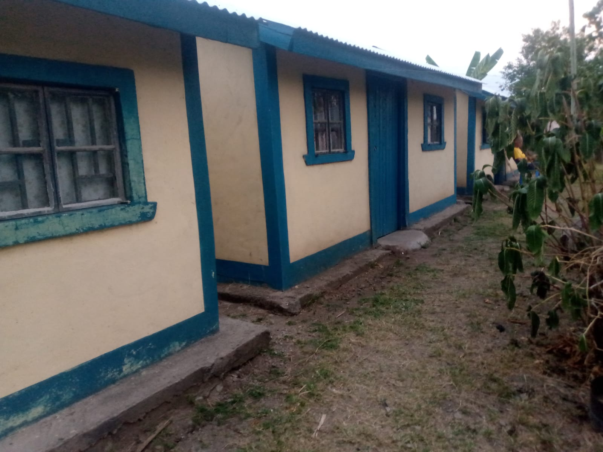
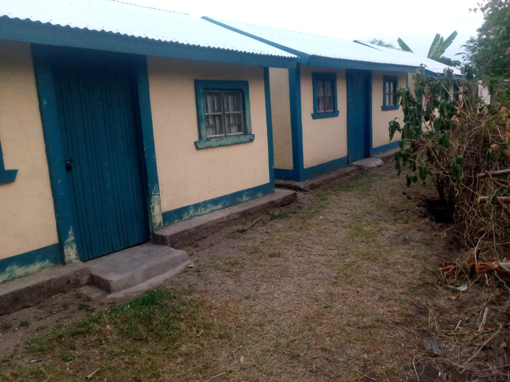
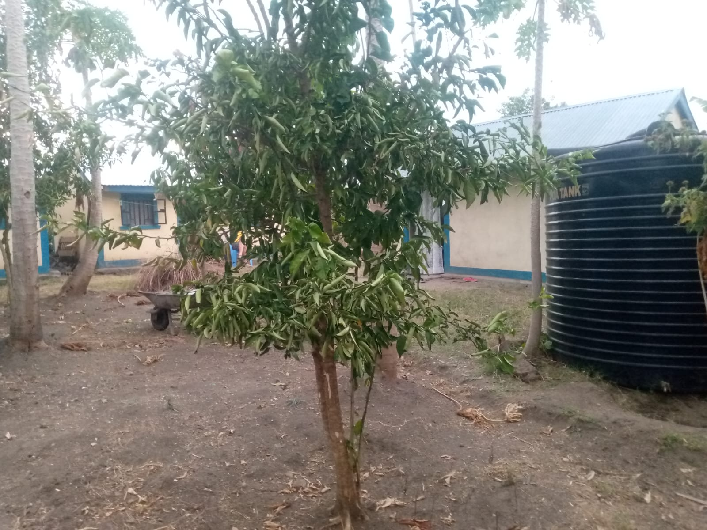

Volunteer with KWEPU
KWEPU welcomes international and Kenyan volunteers interested in environmental conservation, climate action, sustainable agriculture, schools, youth and community development. We also welcome long-term partnerships with volunteer-sending organizations, including German weltwärts organizations.
What volunteers can do
Support tree nursery management, seedling propagation, tree planting, agroforestry, kitchen gardens, school environmental programmes, youth engagement, community outreach and project documentation.
Accommodation & welfare
KWEPU has planned hostel accommodation with capacity for up to 12 volunteers. We provide local orientation, community integration, project supervision, guidance on local culture and practices, and support throughout the placement.
Arrival support
We can coordinate arrival and onward travel from Kisumu or Nairobi and assist with secure overnight accommodation when needed.
Sending organizations
We work with partners to agree duties, supervision, safeguarding, accommodation, working hours, emergency procedures, monitoring and communication.
Volunteer Accommodation & Support
KWEPU recognizes that suitable accommodation and day-to-day support are important parts of a successful volunteer placement. Our accommodation arrangements provide a practical residential base on Rusinga Island while volunteers participate in KWEPU programmes and engage with the local community.
For international partnerships, KWEPU is prepared to coordinate accommodation, orientation, supervision, safeguarding arrangements, working schedules, emergency procedures, communication and monitoring requirements together with the sending organization.
Accommodation capacity: Up to 12 volunteers.



Partnership contact
Ramanus Abade
Telephone / WhatsApp: +254 724 761 771
Email: partnerships@kwepu.or.ke
Joseph Odoyo
Telephone / WhatsApp: +254 721 200 479
Email: volunteers@kwepu.or.ke
Interested in a placement or partnership?
Contact KWEPU to discuss volunteer roles, timing, supervision, accommodation and organizational partnerships.